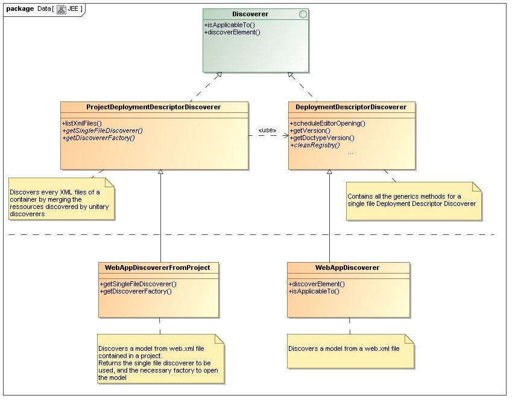

Class Architecture
In order to apply a single file discoverer directly to a project, we use the ProjectDeploymentDescriptorDiscoverer.
- It lists all the xml files in the containers
- It retrieves the Discoverer to be used with getSingleFileDiscoverer()
- It applies the discoverer to every xml files listed and store the returned resource
- It merges all the resources and open the result using the factory obtained with getDiscovererFactory()
